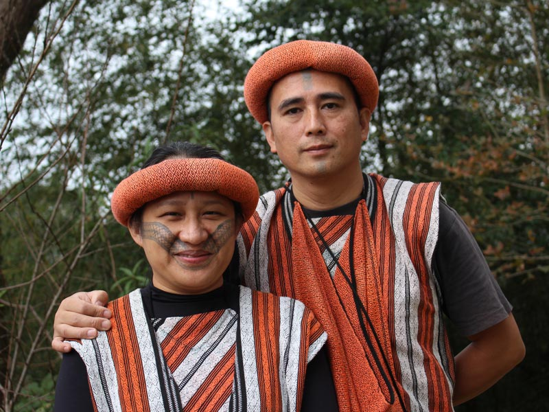

<!DOCTYPE html>
<html>

<head>
    <meta charset="utf-8" />
    <meta http-equiv="X-UA-Compatible" content="IE=edge">
    <title>原住民介紹</title>
    <meta name="viewport" content="width=device-width, initial-scale=1">
    <link rel="stylesheet" href="https://stackpath.bootstrapcdn.com/bootstrap/4.1.1/css/bootstrap.min.css" integrity="sha384-WskhaSGFgHYWDcbwN70/dfYBj47jz9qbsMId/iRN3ewGhXQFZCSftd1LZCfmhktB"
        crossorigin="anonymous">
    <script>
        function checkTro() {
            document.getElementById('Intro').style.backgroundColor = "blue";
            document.getElementById('Intro').style.color = "white";
            document.getElementById('where').style.backgroundColor = "white";
            document.getElementById('where').style.color = "gray";
            document.getElementById('trad').style.backgroundColor = "white";
            document.getElementById('trad').style.color = "gray";
            document.getElementById('good').style.backgroundColor = "white";
            document.getElementById('good').style.color = "gray";
            document.getElementById('shy').src = "../../resources/photo/Introduction/1_1.jpg";
            document.getElementById('contain').innerText = "平埔族群（Taiwanese Plains Indigenous Peoples），過往稱之平埔族，是外來政權對台灣原住民族分類管理所使用的稱呼，對應的另一稱呼為高山族。後因隨著學術界、文化界進一步研究，認知其為多數民族集合而非僅單一民族，故當今未獲中華民國政府承認的原住民族群，多數以「平埔族群」來泛稱。多數平埔族群至今皆未獲中華民國政府承認為原住民族，除了部分當前歸籍排灣族之馬卡道族及花東原歸籍阿美族之噶瑪蘭族等族人以外。平埔族群往昔在荷蘭、西班牙統治時稱為「土著」；清領時期，則大多稱為化番、熟番[註 1]，與生番、野番等詞相對[1]:12。因化番、熟番多住在「平地草埔」，故又稱平埔仔、埔仔人、平埔番（閩南語：Pêⁿ-po͘-hoan；英語：Pepohoan[2][3][4]），其中「平埔」一詞代表「平原」或「平地」之意。[5]到了日治時期則於《臺灣蕃人事情》一書中將臺灣原住民分成高山族、平埔族[1]:13，各地平埔族群也曾發起更名為「東寧族」的社會運動。[3][6]至中華民國政府時期起平埔族後代大多已喪失族群意識，且不獲官方認定為原住民族；後來臺灣族群研究興起，這些平埔族群的歷史才開始受到主流社會的關注，但平埔族群曾一度誤以為同為「平埔族」這個民族，後來才逐漸重新細分[註 2][1]:18。賽夏族及邵族也曾一度被歸為平埔族群，可見「平埔族」、「熟番」、「化番」及「生番」等分類，皆為外來政權依統治方便，未依原住民族自我認同所做的分類，造成當代的平埔正名或平埔復名運動。";
        }
        function checkwhere() {
            document.getElementById('Intro').style.backgroundColor = "white";
            document.getElementById('Intro').style.color = "gray";
            document.getElementById('where').style.backgroundColor = "blue";
            document.getElementById('where').style.color = "white";
            document.getElementById('trad').style.backgroundColor = "white";
            document.getElementById('trad').style.color = "gray";
            document.getElementById('good').style.backgroundColor = "white";
            document.getElementById('good').style.color = "gray";
            document.getElementById('shy').src = "../../resources/photo/Introduction/1_2.jpg";
            document.getElementById('contain').innerHTML = "泰雅族分佈在台灣北部中央山脈兩側，以及花蓮、宜蘭等山區。又分為泰雅亞族（Tayal）和賽德克亞族（Sedek）。泰雅亞族又分為Sekoleq群和 Tseole群。賽德克亞族又分為東賽德克群和西賽德克群。"
        }
        function checktrad() {
            document.getElementById('Intro').style.backgroundColor = "white";
            document.getElementById('Intro').style.color = "gray";
            document.getElementById('where').style.backgroundColor = "white";
            document.getElementById('where').style.color = "gray";
            document.getElementById('trad').style.backgroundColor = "blue";
            document.getElementById('trad').style.color = "white";
            document.getElementById('good').style.backgroundColor = "white";
            document.getElementById('good').style.color = "gray";
            document.getElementById('shy').src = "../../resources/photo/Introduction/1_3.jpg";
            document.getElementById('contain').innerText = "平埔族群中祭祀慣習極為平常，一般說來，祭祀對象除自然物崇拜之外，較特殊為以各種形式型態存在的祖靈。若區分，平埔族祖靈崇拜約可分為3種：賽跑型祖靈祭祀，盛行於臺灣中部的巴則海族、巴布拉族、道卡斯族等，名稱來由為該祭祀儀式均以族人競走為重心，該類型祭祀有時也與少年成年禮混合存在。南部西拉雅族及馬卡道族的祖靈祭以一陶罐作為祖靈的神體而加以崇拜，這一崇拜並祭祀陶罐的風俗或與祖骨崇拜有關。但鄰近的大武壠族卻不崇拜陶罐，亦不相信祖靈存於陶罐中，而相信祖靈乃存在於公廨中的向神座周圍。臺灣北部平埔各族如凱達加蘭族、噶瑪蘭族或雷朗族，其祖靈祭儀式均無固定特殊方式。"
        }
        function checkgood() {
            document.getElementById('Intro').style.backgroundColor = "white";
            document.getElementById('Intro').style.color = "gray";
            document.getElementById('where').style.backgroundColor = "white";
            document.getElementById('where').style.color = "gray";
            document.getElementById('trad').style.backgroundColor = "white";
            document.getElementById('trad').style.color = "gray";
            document.getElementById('good').style.backgroundColor = "blue";
            document.getElementById('good').style.color = "white";
            document.getElementById('shy').src = "../../resources/photo/Introduction/1_4.jpg";
            document.getElementById('contain').innerHTML = "紋面的藝術：除了美觀、避邪以外，代表了女子的善織、男子的勇武，也是死後認祖歸宗的標誌。<br>精緻的織布藝術：以苧麻為原料、植物染料為主的泰雅族織布是原住民族中最善於織造藝術的族群。目前因毛線材料的便利性及色彩多樣性，許多族人都樂於使用，反而使傳統的原料逐漸沒落。<br>浪漫的口簧琴舞：口簧琴為九族所共有，但能將它發揮得漓淋盡致並配上舞蹈表現男女情意的只有泰雅族。<br>貝珠衣：以白色貝類穿孔磨成細小如綠豆之貝珠，將它穿綴於整件衣服上，是泰雅族獨特的衣飾文化。貝珠衣有多種形式，最尊貴的一種是部落領袖或獵首英雄於凱旋歸來參加盛會時所穿，也是結婚時重要的聘禮，除了貝珠衣以外，珠裙、珠帽、綁腿亦以貝珠串成。珠裙常使用於訂婚或女子生產後男方送給女方家長的答謝禮。珠帽則為頭目所佩戴。";
        }
    </script>
</head>

<body>
    <div class="container">
        <div class="row">
            <div class="btn-toolbar" role="toolbar" aria-label="Toolbar with button groups">
                <div class="btn-group col-lg" role="group" aria-label="First group">
                    <button type="button" class="btn btn-primary col-sm btn-lg" style="background-color: blue; color: white"
                        id="Intro" onclick="checkTro()">介紹</button>
                    <button type="button" class="btn btn-primary col-sm btn-lg" style="background-color: white; color: gray"
                        id="where" onclick="checkwhere()">分佈</button>
                    <button type="button" class="btn btn-primary col-sm btn-lg" style="background-color: white; color: gray"
                        id="trad" onclick="checktrad()">節慶</button>
                    <button type="button" class="btn btn-primary col-sm btn-lg" style="background-color: white; color: gray"
                        id="good" onclick="checkgood()">特色</button>
                </div>
            </div>
            
        </div>
        <div class="col-lg-12" style="border-style:groove;height:auto;background-color: white;">
            
        </div>
       
        <div>
            <br>
            <p id="contain">
                泰雅族居住地域境內的高山相當多，例如插天山、棲蘭山、合歡山、大霸尖山、奇萊山等都是。<br>
                河川則有新店溪、大甲溪、秀姑蘭溪等。<br>
                泰雅族以山田燒墾和狩獵採集為生，聚落以集居式的村落為主。<br>
                大體而言，社會組織分成：部落組織、祭祀團體、共負罪責團體、狩獵團體，這四個團體的成員有互相重疊的特質，在不同部落，祭祀團體可能大於狩獵團體，其他的部落可能狩獵團體大於任何一個團體。各地的差異性頗大，無法一概而論。<br>
                人口分佈以花蓮秀林鄉最多，分佈區尚有南投仁愛鄉、新竹尖石鄉、桃園復興鄉、花蓮縣萬榮鄉、宜蘭縣南澳鄉。<br>
                總人口數約七萬九千餘人僅次於阿美族，為台灣原住民族的第三大族。<br>
                在泰雅族的世界裡，有二個迴異於其他族群的觀念：gaga的觀念及rutux的信仰理念。<br>
                gaga是一種社會規範，是泰雅人日常生活，風習俗慣的誡律，觸犯了gaga表示觸犯了禁忌，可能受到神靈的懲罰。遵守同一gaga的人共同舉行祭儀、共勞共享。<br>
                rutux是一種超自然的神靈信仰。一個人觸犯了gaga可能會受到rutux的處罰;被rutux嚇到可能會生病;在戶外吃飯、喝酒時要彈一點食物在地上給rutux吃。在祖靈祭以後，泰雅人要離開祭祀地時必須越過火堆，以示與rutux隔離。種種跡象顯示對rutux的懼怕。
            </p>
        </div>
    </div>

</body>

</html>